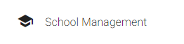

If not yet in Dashboard page, click the navigation button named Dashboard.

If not yet in User Management page, click the navigation button named User Management.
Once in User Management page, you have two options on what to edit, administrators and users. Once you have chosen what to edit, you have the capability to add users.
Not only that, you can also update user accounts. Update their personal information, account information, and status.
Want to search specific accounts? You can search the account using the filter field.
Want to sort the table? You can sort specific columns by ID and Username.
Want to view the table page by page? Change the number of viewable items per table? Pagination is available at the footer of the current table.
Error persists? Table not updating? Added items are not getting added? Contact the developers.
If not yet in School Management page, click the navigation button named School Management.
Once in School Management page, you have the capability to add schools.
Not only that, you can also update schools. Update its school information and status.
Want to search a specific school? You can search the school using the filter field.
Want to sort the table? You can sort specific columns by ID.
Want to view the table page by page? Change the number of viewable items per table? Pagination is available at the footer of the current table.
Error persists? Table not updating? Added items are not getting added? Contact the developers.
I'm visible because I am open
I'm visible because I am open
I'm visible because I am open
If not yet in Configuration page, click the navigation button named Configuration.
Once in Configuration page, you have the capability to change application status.
Want to backup your entire database?
Want to backup specific database tables instead of the entire database?
Error persists? Application status not changing? Database not exporting? Contact the developers.
If not yet in My Account page, click the navigation button named My Account.
Once in My Account page, you have the capability to update your account.
Error persists? Account not updating? Contact the developers.